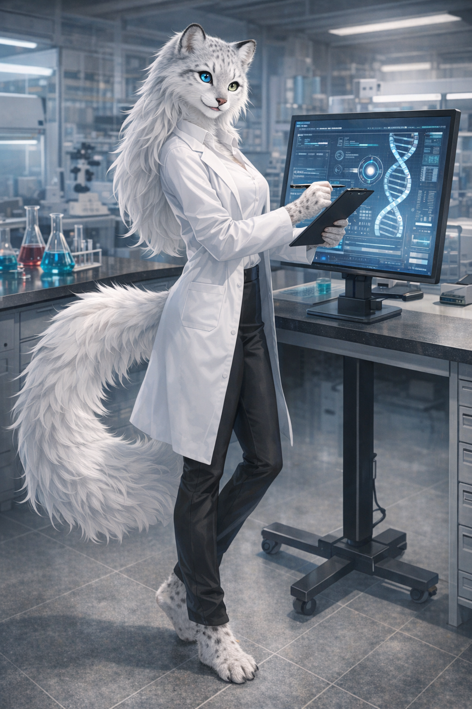
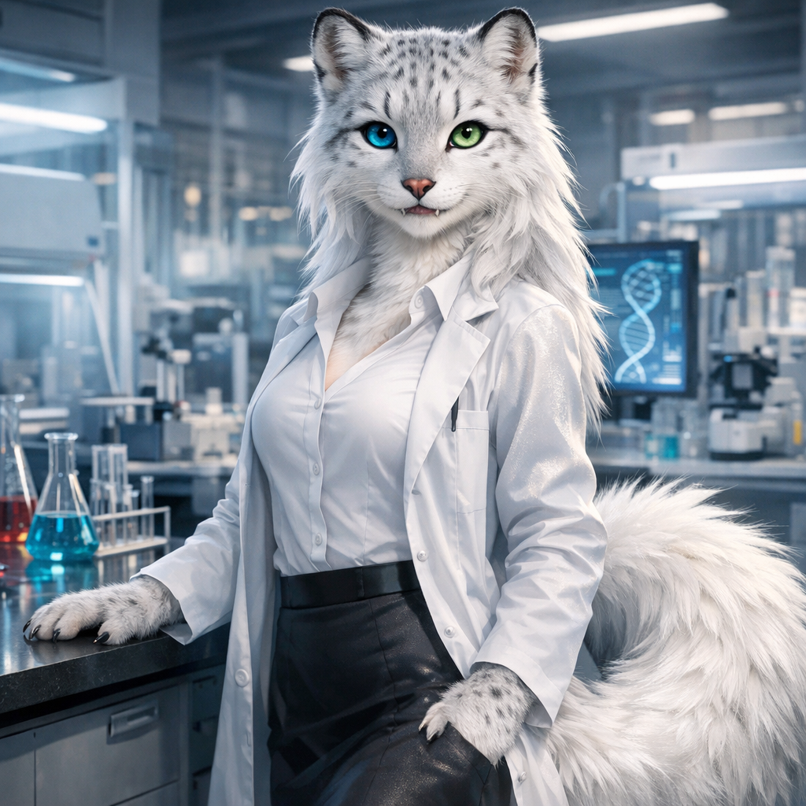

Мия Юки-цубаса
Ферлис (ирбис 40% · арктическая лиса 40% · фенрир-волк 20%) CRISPR-гибрид F1
- Возраст
- 19 лет
- Пол
- Женский
- Рост
- 168 см
- Специальность
- Биоматериалы и Адаптивные Композиты
- Факультет
- Материаловедение и Биомиметика
Внешность (кратко)
Белоснежная шерсть с серебристым отливом, гетерохромия (синий / изумрудный), сверхдлинный пушистый хвост, термохромный эффект на холоде, сознательный контроль формы зрачков.
Предыстория
Младшая дочь корпорации «Юки-Рики Груп» — лидера в производстве термо- и фотохромных тканей, адаптивной брони и умной одежды. Официально готовится принять отдел R&D.
Характер
Спокойная, наблюдательная, с лёгкой иронией. Кажется холодной, но внутри — азартный исследователь. Не любит, когда её называют «принцессой корпорации». Боится, что её ценят только за фамилию.
Особая способность
Гетерохромный зрачковый контроль — синий глаз лучше видит в сумерках (расширенные зрачки ирбиса), зелёный — днём с повышенной цветовой чёткостью (лисья адаптация). Может переключать фокус между ними сознательно.
Positive Prompt (для генерации)
anthropomorphic female ferlis hybrid, snow leopard 40% arctic fox 40% fenrir wolf 20%, beautiful young woman 19 years old, pure white silver-tinted fur, very long extremely fluffy bushy tail like arctic fox with snow leopard rosettes faintly visible, large rounded ears with black tips and white inner fur, heterochromia eyes one bright icy blue right eye one vivid emerald green left eye, conscious pupil control vertical slit to round, sharp intelligent gaze, small elongated canines, retractable matte white claws, athletic slender build with soft curves, elegant posture, wearing modern university tech casual outfit slim black turtleneck futuristic fabric silver accents lab coat open, confident calm expression with light ironic smile, detailed fluffy fur texture, soft dramatic lighting, cyberpunk university lab background, high detail, masterpiece, best quality, ultra-detailed fur, sharp focus, cinematic lighting